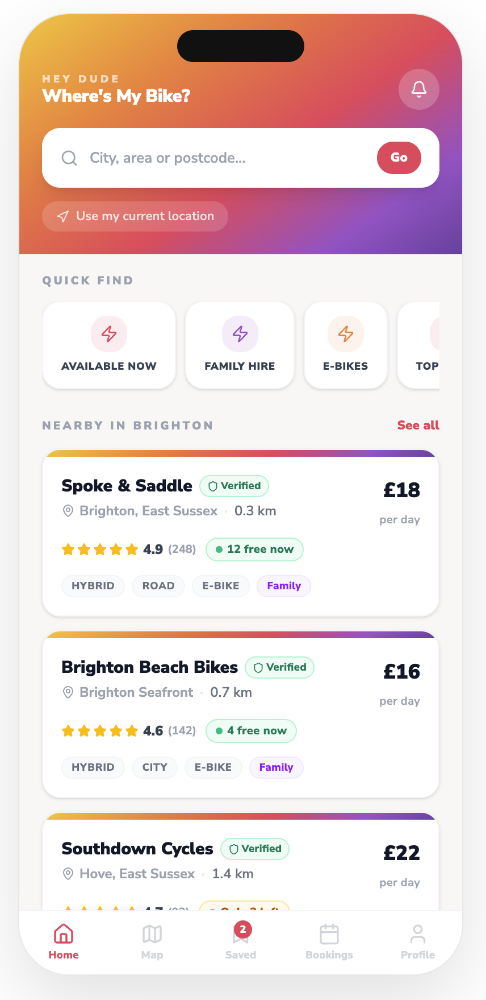
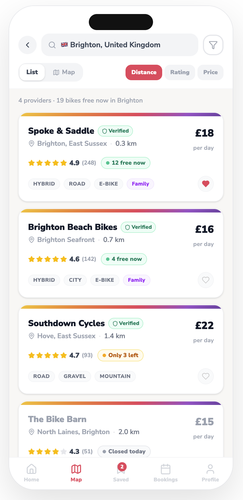
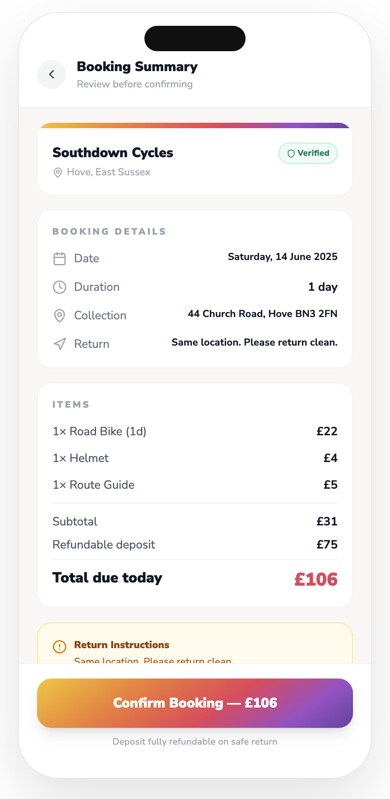
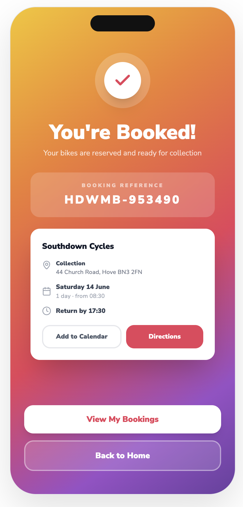
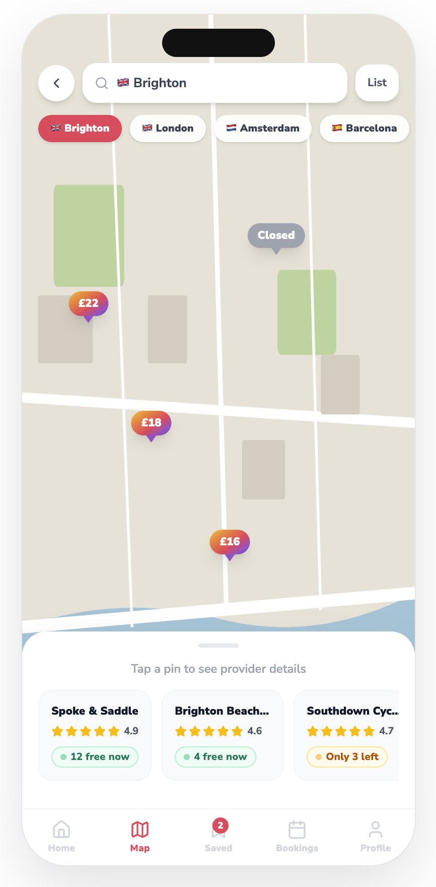
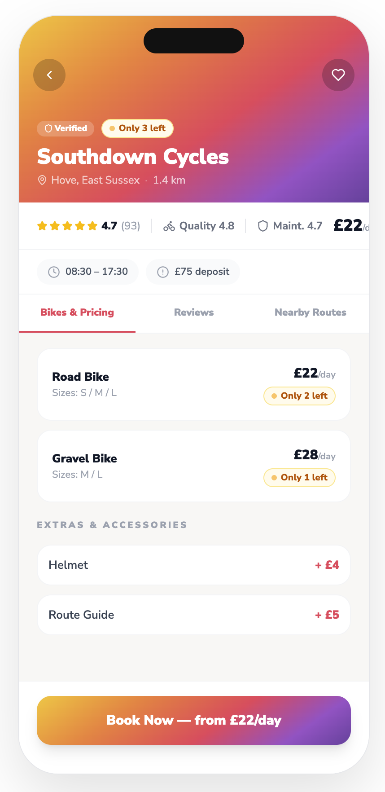
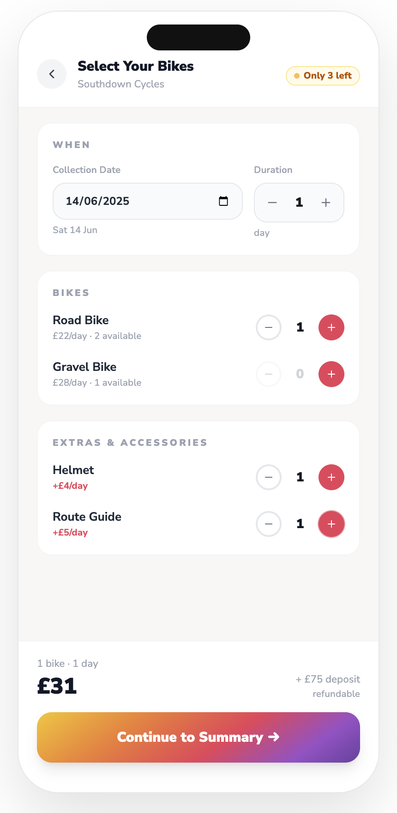

Product design case study
Dude, Where’s My Bike?
Impact at a glanceDeveloped an end-to-end interactive bike-hire concept, from provider discovery and comparison to booking confirmation, supported by reusable interface patterns. No live bookings or commercial results are claimed.
Helping tourists discover, compare and book bikes from trusted local providers in unfamiliar cities.
I developed this self-initiated concept from an identity project into an end-to-end product proposition, combining comparative research, journey design, interface design, a reusable system and an interactive prototype.
Working prototype
Explore the prototype
Explore the interactive prototype to the right below to experience the end-to-end journey, from finding nearby providers and comparing availability to selecting a bike and confirming a booking.
What I owned
I owned the concept and experience from the original brand identity through to the interactive product prototype.
- Comparative research and product framing
- Target audience and end-to-end user journey
- Interaction and interface design
- Brand identity and visual direction
- Component system and documentation
- Interactive prototype development

From identity project to product opportunity
The project began as a self-initiated identity for a bike-hire service aimed at tourists on Australia’s Gold Coast. I then explored how the brand could support a useful digital experience rather than exist only as a visual exercise.
I broadened the proposition into a worldwide city-bike product for tourists and occasional riders who want to explore an unfamiliar destination without having to search across disconnected local providers.
Comparative research and product focus
I reviewed existing bike-hire apps, travel-booking websites and bike-rental identities to understand the conventions travellers would already recognise. Three recurring needs shaped the product:
- Low-friction onboardingMake the proposition and route into discovery immediately clear.
- Simple bookingKeep availability, bike type, price and booking details visible.
- Location-led discoveryHelp tourists orient themselves and find nearby providers.
This was comparative desk research rather than primary user research. Its purpose was to form an initial product hypothesis for future testing.
The core journey
The prototype focuses on a logged-in traveller completing the central task in four concise stages:
- DiscoverSearch a city or browse nearby bike-hire providers.
- CompareEvaluate price, availability, rating, distance and bike type.
- SelectChoose a provider and the most suitable available bike.
- BookReview the selection and receive clear confirmation.



Key product decisions
Provider-led map discovery
The map shows bike-hire providers rather than individual bikes. For travellers booking in advance, provider location and reliability create a more useful starting point than a potentially volatile view of individual inventory.
Trade-off: This supports planned hire more clearly than spontaneous dockless-bike discovery.


Comparison before commitment
I surfaced price, live availability, ratings, distance and bike type before booking so users could compare providers using practical criteria rather than relying on brand imagery alone.
Trade-off: Richer comparison supports confidence but increases information density, making hierarchy and progressive disclosure important.
A short, reviewable booking flow
I kept the core journey to approximately four stages and added a summary before confirmation. This reduces effort while giving travellers a chance to verify the provider, bike and booking details before committing.
Trade-off: The conceptual flow intentionally omits payment, identity verification and provider-specific policies; these would need to be designed and tested before production.

Validation status and next steps
This is a conceptual interactive prototype and has not yet been tested with users. The next stage would be structured usability testing with tourists who typically hire bikes while travelling.
- Test whether travellers understand the provider-led model
- Measure whether they can find and compare suitable options
- Identify hesitation across the booking stages
- Validate which trust and availability signals influence selection
- Explore account creation, payment, cancellation and unavailable-bike states